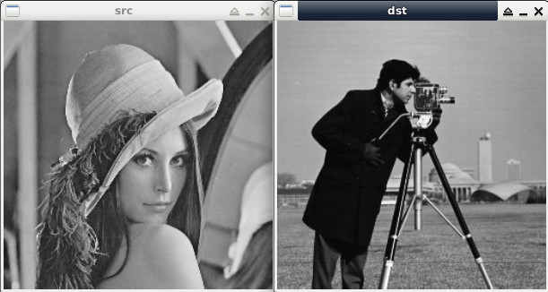

Steward
分享是一種喜悅、更是一種幸福
程式語言 - OpenCV - C/C++ - Image Processing - Shape Distance
參考資訊：
https://docs.opencv.org/master/d7/d9f/tutorial_linux_install.html
main.cpp
#include <opencv2/shape.hpp>
#include <opencv2/imgcodecs.hpp>
#include <opencv2/highgui.hpp>
#include <opencv2/imgproc.hpp>
#include <opencv2/core/utility.hpp>
#include <iostream>
#include <string>
using namespace std;
using namespace cv;
static vector<Point> simpleContour(const Mat ¤tQuery, int n = 300)
{
vector<vector<Point> > _contoursQuery;
vector<Point> contoursQuery;
findContours(currentQuery, _contoursQuery, RETR_LIST, CHAIN_APPROX_NONE);
for (size_t border = 0; border < _contoursQuery.size(); border++) {
for (size_t p = 0; p < _contoursQuery[border].size(); p++) {
contoursQuery.push_back(_contoursQuery[border][p]);
}
}
int dummy = 0;
for (int add = (int)contoursQuery.size() - 1; add < n; add++) {
contoursQuery.push_back(contoursQuery[dummy++]);
}
cv::randShuffle(contoursQuery);
vector<Point> cont;
for (int i = 0; i < n; i++) {
cont.push_back(contoursQuery[i]);
}
return cont;
}
int main(int argc, char **argv)
{
Size size(300, 300);
Mat src = imread("1.jpg", IMREAD_GRAYSCALE);
Mat srcToShow;
resize(src, srcToShow, size, 0, 0, INTER_LINEAR_EXACT);
imshow("src", srcToShow);
moveWindow("src", 0, 300);
vector<Point> csrc = simpleContour(src);
if (src.empty()) {
printf("failed to load 1.jpg\n");
return -1;
}
Mat dst = imread("2.jpg", IMREAD_GRAYSCALE);
Mat dstToShow;
resize(dst, dstToShow, size, 0, 0, INTER_LINEAR_EXACT);
imshow("dst", dstToShow);
moveWindow("dst", 305, 300);
vector<Point> cdst = simpleContour(dst);
if (dst.empty()) {
printf("failed to load 2.jpg\n");
return -1;
}
cv::Ptr<cv::ShapeContextDistanceExtractor> mysc = cv::createShapeContextDistanceExtractor();
float dis = mysc->computeDistance(csrc, cdst);
printf("distance: %f\n", dis);
waitKey();
destroyWindow("src");
destroyWindow("dst");
return 0;
}
CMakeLists.txt
cmake_minimum_required(VERSION 2.8)
project(main)
find_package(OpenCV REQUIRED)
include_directories(${OpenCV_INCLUDE_DIRS})
add_executable(main main.cpp)
target_link_libraries(main ${OpenCV_LIBS})
編譯、執行
$ cmake . $ make $ ./main
完成

Distance: 0.139355